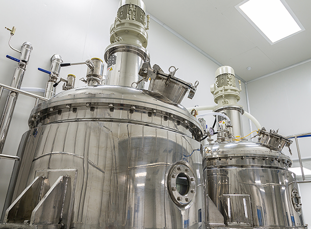

home> 제품정보> 차량요소수제품
차량요소수 제품
“디젤 매연으로 부터 대기를 보호하는 친환경 요소수, 녹스-K”
KG케미칼이 만든 대한민국 친환경 요소수의 새로운 기준
-

- 녹스 K 요소수란?
- 디젤 차량에 엔진에서 나오는 질소산화물(Nox)을 정화시켜 무해한 질소(N2)와 물(H2O)로 배출 시키는 촉매제 독일 자동차 공업협회에서 직접 당사 공장 방문하여 AdBlue를 획득한 제품 S-Oil, GM코리아, 이베코코리아, 대동공업 외 국내외 대기업이 선택한 요소수 생산 LOT별 품질관리를 통한 품질 보증 및 추적시스템 운영
-
- 녹스 요소수 적용범위
- 상용차(덤프/중장비) , 버스(고급/중형/미니), 승용차(승용/RV) 등 다양한 차량에 녹스 요소수를 주입 할 수 있습니다.
-
- 녹스-K 주입기
- 용량 1,400리터 , 규격 140(W)x205(H) , 호스길이 9m , 탱크재질 PE 이러한 사양을 가지고 있으며 호스거치는 호스걸이 방식입니다.KTC형식승인 국내 1호 취득을 함으로서 최고의 성능을 가지고 있습니다.